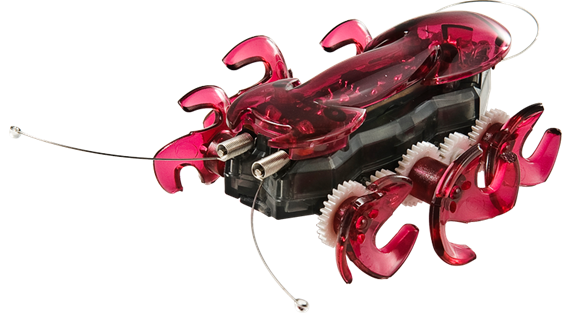
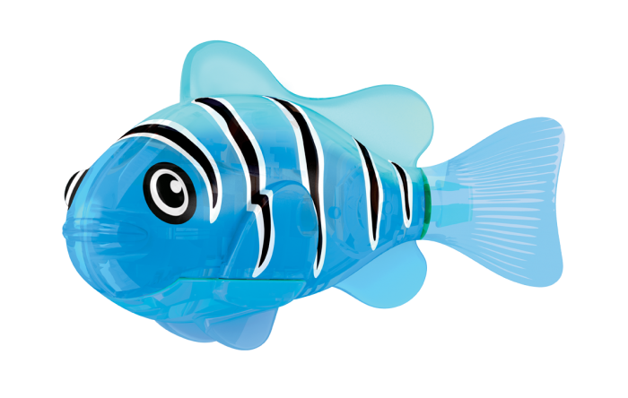
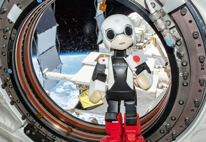
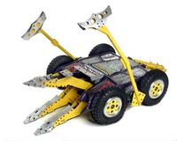

Hobby robots are robots which have been created for fun. An example of this type of robot would be a line follower, hexbug, robo-fish,etc. Usually these types of robots are built for children to play with but some people make the robots themselves.Hobby robots are usually not big and are usually creatures such as insects. These types of robot are usually easy to program because if they are bought from a company e.g. Lego. Lego Mindstorms are fun to build as you can build a unique robot. Lego also made their own programing software for children to program. Lego also make it fun because they add challenges for you on their website.  A competition is a robot which has been created for competition. These types of robot are created to battle each other. A very simple competition robot is a sumo-bot. A sumo-bot is a simple robot because he only has to wheels and a ram. A more complicated robot would have saws handles and even flame throwers. There is a very well known competition TV series in America called BattleBots.BattleBots is very intense as people build huge war like robots to battle against each other in an arena. The arena is sometimes empty but sometimes it has traps. In most competitions the robots receive a lot of damage such as fried mother boards and broken wheels, but most robots are easily repaired because they have damage which can be repaired. Sometimes the robots get destroyed completely. People enjoy creating the robots because they make their own war machine.
People also compete for the functions of their robot and what they can do, e.g. walking up and down the stairs. People also try and make the best artificial intelligence for the robot. There was a japanese robot called Kirobo which was sent to the International Space Station so it could learn for itself. It would remember what words the astronauts said to each other and to him, and it would study the people on board.  